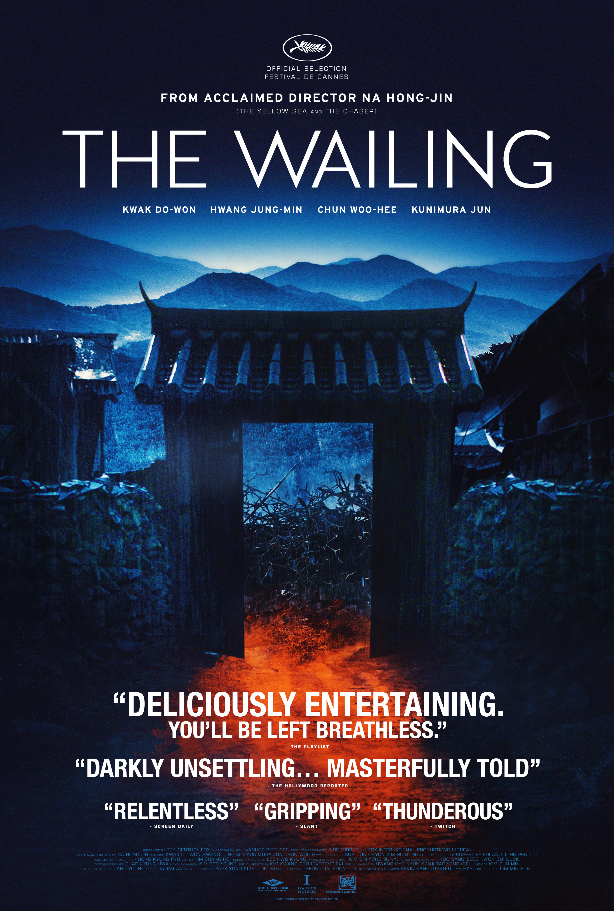

Andrew Gorczyk
Staff Writer
What was your first introduction to horror? How old were you?
Introduction to Horror: Oh jezz…that’s hard to pin point. I mean we all have countless memories growing up and seeing Nightmare on Elm Street or Friday the 13th on TV (well…ok that ages me since now what…the “kids†call it “streamingâ€â€¦f@#k I’m getting old) but what can we really say is when we first truly got scared? What was our first media experience were we were sickened and just tapped out? At least that’s what I would refer to as a first memory of horror because we are too young to separate it from our base emotions and enjoy it for the experience rather than being decimated by the viewing. But if I had to say? My first experience was seeing the ending to Akira isolated. You know; the scene where its body horror personified and he’s growing uncontrollably? I saw this, with no context, as an 8 year old boy in a comic book shop. They had TVs all around the shop on the ceiling and what I first thought was hyper cool animation (at the time I had no idea what anime was) turned into something I nearly threw up during. I still remember falling to my knees when Tetsuo’s girlfriend was crushed to death inside his increasing body mass and you saw a pool of blood fill in the space that used to house her body. When he said “I can feel her inside me†I was dizzy. Because of this experience I refused to watch anime until I was in my mid teens…and horror in general (except ones that aren’t apparent like Alien(s)) was a rough issue for me until later. F@#kin’ Akira…
What are your top 10 favorite horror films?
I can’t do favorites…I mean a lot of times it’s based on how you feel at that moment and it’s ever changing? But a few good ones that pop up with no explanation (I’m going to be lazy here)
table>
|
 |
|
|
|
| Army of Darkness |
The Wailing/td>
| Predator |
Empire of The Dark |
Tales from The
Darkside: The Movie |
|
|
|
 |
|

|
Friday The 13th
Part IV |
The Guest |
Aliens |
Nightmare on
Elm Street 3
Dream Warriors |
Dawn of The Dead
Day of The Dead |
Alligator |
**Notes on why I chose these films
- Army of Darkness (because of course)
- The Wailing (if you haven’t watched it damnit watch it!)
- Predator (it f’ing counts!)
- Empire of the Dark (should not be on your list)
- Tales from the Darkside: The Movie (I’m sure it doesn’t hold up and man…maybe I should have rewatched these before adding it to a list? But man..that damn cat!)
- Friday the 13th Part IV (It has Crispin motherf#$kin’ Glover in it!)
- The Guest (I know it’s more of a thriller but man…I love that movie and I’ll add it to as many damn lists that I can technically squeeze it into!)
- Aliens (I think it counts and the movie rocks. It rocks hard)
- Nightmare on Elm Street 3: Dream Warriors (The more imaginative one of the series. I just wish they all dressed in The Warriors aesthetic in their dream selves…)
- Dawn of the Dead/Day of the Dead (I’m going to count this as one since they both are needed in your list but vary on the mood you are in. Do I want to live in a Mall or a Salt mine? I mean it’s hard to pick).
- Alligator (1980) (The alligator is flushed down the toilet and this happens in Chicago. That’s all you need to be hooked in!)
What is your favorite sub-genre of horror?
You’ve probably gotten a feeling already with some of my picks but it’s totally schlock. Give me those so bad its good campy horror flicks and I will say yes every time. Yes; good suspense, supernatural, or survival horror flicks are great but man…camp? Camp always wins in the end.
In your opinion, what are 3 underrated horror films that everyone should watch at least once?
Damnit….I mean I don’t have a pulse on today’s culture and what’s hip so I don’t know what is under-rated. But ones I know people haven’t seen typically that they need to? Well of course you need to see the Wailing. And the Neon Demon has just some of the best hip visuals you’ll see in modern movies. And oddly enough The Thing. I know it’s a classic but you’d be surprised how many people have never seen the movie and damnit! That is required viewing!
|
|
 |
What was one of your most memorable movie theater experiences?
Ah jezz…ok I can’t do this for a horror flick. Most of my horror flick in theater experiences have people who are making stupid comments that help save the movie like “Oh don’t go in the room! He’s going to kill your ass†to which I nod with accepting agreement. Or the jackasses (or your awful date) are getting scared and worked up over basic B s@$t and you have to pretend you’re not bored out of your mind. Horror is a genre I think usually works better in the comfort of your own basement. But a memorable normal movie experience in the theater? I remember seeing Gladiator with my best friend from High School (I’m old). During the scene where Russell Crow is killing people with zeal in the entry level coliseum people were cheering in the audience when he killed a man in a “cool†fashion using two swords. I leaned over to my friend and whispered “how great would it be if someone said “A man just died!â€â€ to which he stood up and said in a mocking dramatic way “A MAN JUST DIED!†and sat down. You could hear a pin drop due to how silent every fell. The atmosphere was rich and full with people who never really thought about any moral dilemmas in their life asking themselves “Am…am I a monster?â€. To which we ended up laughing who heartedly because it’s bloody Gladiator. And me and my friend were monsters. Also Gladiator isn’t a great movie….sorry to break it to you. But it can be entertaining. Cleft Lip-McGillicuddy is just fantastic in that movie.